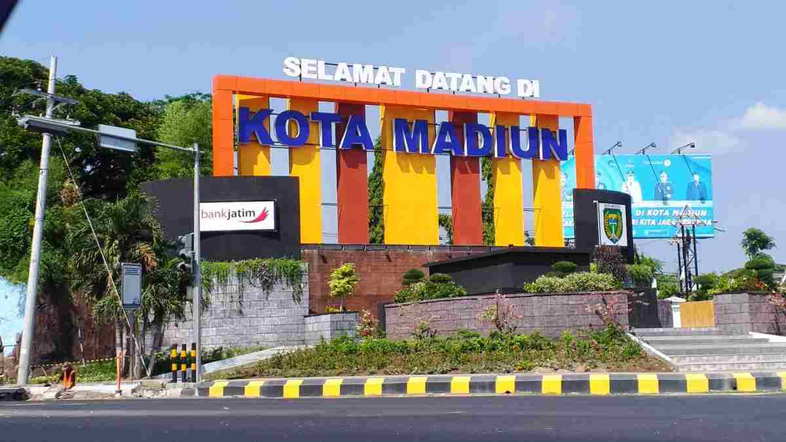
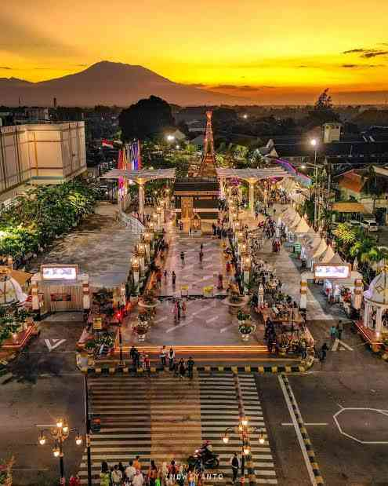
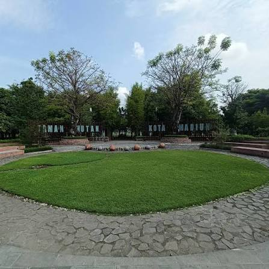
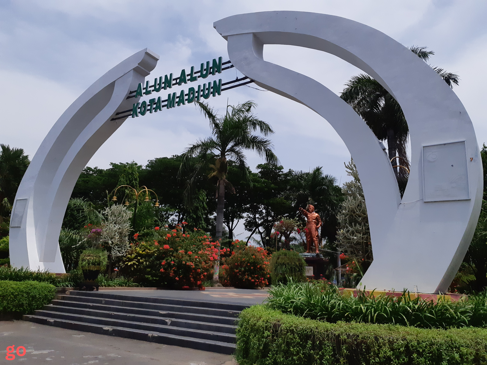

JAWA TIMUR, INDONESIA
Mari mengenal Kota Madiun yang memiliki beberapa panggilan seperti Kota Pecel, Kota Gadis, dan Kota Pendekar. Kota yang memiliki beberapa tempat wisata dan kuliner yang menarik untuk dikunjungi ketika berada di Provinsi Jawa Timur.
Jelajahi MadiunTENTANG KOTA

Kota Madiun merupakan salah satu kota di Provinsi Jawa Timur. Kota ini memiliki berbagai ruang publik, kuliner khas, serta tempat menarik yang dapat dikunjungi. Kota Madiun memiliki titik wifi gratis yang dapat digunakan oleh masyarakat dan wisatawan yang berkunjung ke kota ini.
Madiun juga dikenal dengan berbagai makanan khas, salah satunya adalah pecel Madiun yang menjadi salah satu ikon kuliner daerah ini. Selain itu, kota ini juga memiliki beberapa tempat wisatayang menarik untuk dikunjungi, seperti Pahlawan Street Center, Taman Kota, dan Alun-Alun Madiun yang menjadi ruang publik bagi masyarakat untuk bersantai dan menikmati suasana kota.
JELAJAHI

Pahlawan Street Center adalah salah satu ikon Kota Madiun yang menjadi destinasi yang wajib dikunjungi ketika berada di Kota Madiun. Pahlawan Street Center atau biasa disebut PSC menjadi salah satu sumber penghasilan bagi masyarakat sekitar dikarenakan lokasinya yang strategis, sehingga banyak pelaku usaha yang beroperasi di area tersebut terutama saat hari libur.

Terdapat beberapa taman Kota yang berada di Madiun, Taman Kota ini merupakan salah satu runag publik yang digunakan oleh masyarakat untuk bersantai atau berolahraga. Taman Kota ini juga menjadi salah satu tempat yang menarik untuk dikunjungi. Taman Kota Madiun memiliki fasilitas yang cukup memadai seperti lapangan olahraga, area bermain anak, dan tempat duduk yang nyaman untuk bersantai.

Alun-alun Kota Madiun merupakan salah satu tempat yang selalu ramai dikunjungi baik dari masyarakat lokal maupun wisatawan. Alun-alun ini menjadi salah satu pusat UMKM untuk berdagang, sehingga menjadi salah satu tempat yang menarik untuk dikunjungi ketika berada di Kota Madiun.
RASAKAN
Pecel Madiun merupakan salah satu makanan tradisional di kota Madiun sehingga menjadi salah satu nama panggilan untuk Kota ini. Pecel Madiun terdiri dari sayuran rebus yang disiram dengan bumbu kacang yang khas. Pecel Madiun biasanya disajikan dengan tambahan lauk seperti tempe, tahu, dan telur.
Bluder merupakan roti yang memiliki tekstur lembut dan rasa manis. Bluder biasanya disajikan dengan tambahan selai atau cokelat di dalamnya. Roti ini menjadi salah satu makanan khas Kota Madiun yang banyak dicari oleh wisatawan. Roti Bluder juga biasanya menjadi salah satu oleh-oleh khas yang dibawa pulang oleh wisatawan ketika setelah berkunjung dari Kota Madiun.
Brem merupakan makanan khas berbahan dasar fermentasi beras ketan yang memiliki rasa khas. Rasa Brem yang manis dan sedikit asam dengan tekstur yang hilang saat di dalam mulut tampa dikunyah membuat makanan ini menjadi salah satu makanan yang dicari wisatawan untuk dibawa pulang sebagai oleh-oleh.